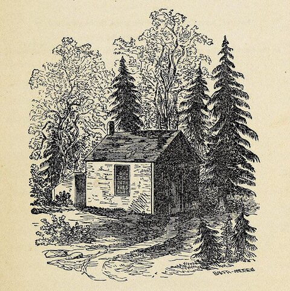

Yes, I Probably Want the Free Wood You're Offering Me

Every man looks at his wood-pile with a kind of affection.
Thoreau, Walden
Wood for Woodturning
If you have a tree coming down anyway, that's the good stuff. Fresh cut trunks and limbs of at least 4″ diameter, especially hardwoods: apple, cherry, plum, peach, maple, walnut, and just about any other fruit or nut tree. Fresh (green) wood is actually easier to turn than dry wood, so don't worry that it just came off the stump yesterday.
For larger trunks, 3′ lengths are about right. That gives me room to work around cracks and pick out the best bowl blanks. Longer than that and it's just harder to move.
Beyond that, I can turn nearly anything that isn't rotted and is bigger than 3″ or 4″ in diameter and length. Odd crotches, twisted limbs, and storm damage are all fair game.
Burls are especially prized by woodturners. If you don't know what a burl is: it's that big warty growth you sometimes see bulging off the side of a tree trunk. The wood inside is wild, swirling grain that you can't get any other way. If you're removing a tree with a burl on it, tell me before the tree service hauls it off.
Wood for Everything Else
Dry, bug-free hardwood: kiln dried, or air-dried up off the ground. Slabs, boards, offcuts from someone else's shop, that stash of walnut your dad had in the garage for thirty years. All welcome.
What I Probably Can't Use
Reclaimed construction lumber and dimensional lumber, meaning the stuff you'd buy at Home Depot to build a garden shed. It's softwood, it's often full of hidden nails and screws, and it's not good for much in my shop. Same goes for anything rotted, painted, or pressure treated.
When in doubt, just ask. Worst case I say no thanks and you're right back where you started.